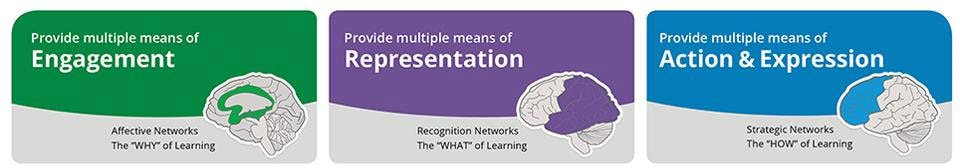
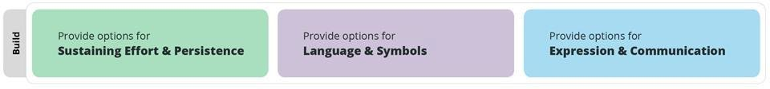

Universal Design for Learning (UDL) Guidelines
Version 2.2
January 25, 2018
This is an archived version of UDL Guidelines Version 2.2 which appeared on the UDL Guidelines website from January 2018 to July 2024. The UDL Guidelines are meant to be dynamic and continuously developed based on research and feedback from practitioners. In 2020, we embarked on a journey to expand UDL Guidelines 2.2 to address barriers rooted in biases and systems of exclusion. That next iteration, Version 3.0, was launched on July 30, 2024.
Suggested Citation: CAST (2018). Universal Design for Learning Guidelines version 2.2. Retrieved from http://udlguidelines.cast.org
The UDL Guidelines are a tool used in the implementation of Universal Design for Learning, a framework to improve and optimize teaching and learning for all people based on scientific insights into how humans learn. Learn more about the Universal Design for Learning framework from CAST. The UDL Guidelines can be used by educators, curriculum developers, researchers, parents, and anyone else who wants to implement the UDL framework in a learning environment. These guidelines offer a set of concrete suggestions that can be applied to any discipline or domain to ensure that all learners can access and participate in meaningful, challenging learning opportunities.
The UDL Guidelines are a tool that can be used to design learning experiences that meet the needs of all learners. These Guidelines offer a set of concrete suggestions for applying the UDL framework to practice and help ensure that all learners can access and participate in meaningful, challenging learning opportunities.

The Guidelines are also organized horizontally. The “access” row includes the guidelines that suggest ways to increase access to the learning goal by recruiting interest and by offering options for perception and physical action.

Finally, the “internalize” row includes the guidelines that suggest ways to empower learners through self-regulation, comprehension, and executive function.
Taken together, the Guidelines lead to the ultimate goal of UDL: to develop “expert learners” who are, each in their own way, resourceful and knowledgeable, strategic and goal-directed, purposeful and motivated.
The UDL Guidelines are not meant to be a “prescription” but a set of suggestions that can be applied to reduce barriers and maximize learning opportunities for all learners. They can be mixed and matched according to specific learning goals and can be applied to particular content areas and contexts.
In many cases, educators find that they are already incorporating some aspects of these guidelines into their practice; however, barriers to the learning goal may still be present. We see the Guidelines as a tool to support the development of a shared language in the design of goals, assessments, methods, and materials that lead to accessible, meaningful, and challenging learning experiences for all.
Affect represents a crucial element to learning, and learners differ markedly in the ways in which they can be engaged or motivated to learn. There are a variety of sources that can influence individual variation in affect including neurology, culture, personal relevance, subjectivity, and background knowledge, along with a variety of other factors. Some learners are highly engaged by spontaneity and novelty while others are disengaged, even frightened, by those aspects, preferring strict routine. Some learners might like to work alone, while others prefer to work with their peers. In reality, there is not one means of engagement that will be optimal for all learners in all contexts; providing multiple options for engagement is essential.
Spark excitement and curiosity for learning
Information that is not attended to, that does not engage learners’ cognition, is in fact inaccessible. It is inaccessible both in the moment and in the future, because relevant information goes unnoticed and unprocessed. As a result, teachers devote considerable effort to recruiting learner attention and engagement. But learners differ significantly in what attracts their attention and engages their interest. Even the same learner will differ over time and circumstance; their
“interests” change as they develop and gain new knowledge and skills, as their biological environments change, and as they develop into self-determined adolescents and adults. It is, therefore, important to have alternative ways to recruit learner interest, ways that reflect the important inter- and intra-individual differences amongst learners.
Empower learners to take charge of their own learning.
In an instructional setting, it is often inappropriate to provide choice of the learning objective itself, but it is often appropriate to offer choices in how that objective can be reached, in the context for achieving the objective, in the tools or supports available, and so forth. Offering learners choices can develop self-determination, pride in accomplishment, and increase the degree to which they feel connected to their learning. However, it is important to note that individuals differ in how much and what kind of choices they prefer to have. It is therefore not enough to simply provide choice. The right kind of choice and level of independence must be optimized to ensure engagement.
● Provide learners with as much discretion and autonomy as possible by providing choices in such things as:
○ The level of perceived challenge
○ The type of rewards or recognition available
○ The context or content used for practicing and assessing skills
○ The tools used for information gathering or production
○ The color, design, or graphics of layouts, etc.
○ The sequence or timing for completion of subcomponents of tasks
● Allow learners to participate in the design of classroom activities and academic tasks
● Involve learners, where and whenever possible, in setting their own personal academic and behavioral goals
Connect learning to experiences that are meaningful and valuable.
Individuals are engaged by information and activities that are relevant and valuable to their interests and goals. This does not necessarily mean that the situation has to be equivalent to real life, as fiction can be just as engaging to learners as non-fiction, but it does have to be relevant and authentic to learners’ individual goals and the instructional goals. Individuals are rarely interested in information and activities that have no relevance or value. In an educational setting, one of the most important ways that teachers recruit interest is to highlight the utility and relevance of learning and to demonstrate that relevance through authentic, meaningful activities. It is a mistake, of course, to assume that all learners will find the same activities or information equally relevant or valuable to their goals. To recruit all learners equally, it is critical to provide options that optimize what is relevant, valuable, and meaningful to the learner.
● Vary activities and sources of information so that they can be:
○ Personalized and contextualized to learners’ lives
○ Culturally relevant and responsive
○ Age and ability appropriate
○ Appropriate for different racial, cultural, ethnic, and gender groups
● Design activities so that learning outcomes are authentic, communicate to real audiences, and reflect a purpose that is clear to the participants
● Provide tasks that allow for active participation, exploration and experimentation
● Invite personal response, evaluation and self-reflection to content and activities
● Include activities that foster the use of imagination to solve novel and relevant problems, or make sense of complex ideas in creative ways
Foster a safe space to learn and take risks.
One of the most important things a teacher can do is to create a safe space for learners. To do this, teachers need to reduce potential threats and distractions in the learning environment. When learners have to focus their attention on having basic needs met or avoiding a negative experience they cannot concentrate on the learning process. While the physical safety of a learning environment is of course necessary, subtler types of threats and distractions must be attended to as well; what is threatening or potentially distracting depends on learners’ individual needs and background. An English Language Learner might find language experimentation threatening, while some learners might find too much sensory stimulation distracting. The optimal instructional environment offers options that reduce threats and negative distractions for everyone to create a safe space in which learning can occur.
● Create an accepting and supportive classroom climate
● Vary the level of novelty or risk
○ Charts, calendars, schedules, visible timers, cues, etc. that can increase the predictability of daily activities and transitions
○ Creation of class routines
○ Alerts and previews that can help learners anticipate and prepare for changes in activities, schedules, and novel events
○ Options that can, in contrast to the above, maximize the unexpected, surprising, or novel in highly routinized activities
● Vary the level of sensory stimulation
○ Variation in the presence of background noise or visual stimulation, noise buffers, number of features or items presented at a time
○ Variation in pace of work, length of work sessions, availability of breaks or time-outs, or timing or sequence of activities
● Vary the social demands required for learning or performance, the perceived level of support and protection and the requirements for public display and evaluation
● Involve all participants in whole class discussions
Tackle challenges with focus and determination.
Many kinds of learning, particularly the learning of skills and strategies, require sustained attention and effort. When motivated to do so, many learners can regulate their attention and affect in order to sustain the effort and concentration that such learning will require. However, learners differ considerably in their ability to self-regulate in this way. Their differences reflect disparities in their initial motivation, their capacity and skills for self-regulation, their susceptibility to contextual interference, and so forth. A key instructional goal is to build the individual skills in self-regulation and self-determination that will equalize such learning opportunities (see Self Regulation). In the meantime, the external environment must provide options that can equalize accessibility by supporting learners who differ in initial motivation, self-regulation skills, etc.
Set a vision for the goal and why it matters.
Over the course of any sustained project or systematic practice, there are many sources of interest and engagement that compete for attention and effort. For some learners, they need support to remember the initial goal or to maintain a consistent vision of the rewards of reaching that goal. For those learners, it is important to build in periodic or persistent “reminders” of both the goal and its value in order for them to sustain effort and concentration in the face of distracters.
● Prompt or require learners to explicitly formulate or restate goal
● Display the goal in multiple ways
● Encourage division of long-term goals into short-term objectives
● Demonstrate the use of hand-held or computer-based scheduling tools
● Use prompts or scaffolds for visualizing desired outcome
● Engage learners in assessment discussions of what constitutes excellence and generate relevant examples that connect to their cultural background and interests
Rise to high expectations using flexible tools and supports.
Learners vary not only in their skills and abilities, but also in the kinds of challenges that motivate them to do their best work. All learners need to be challenged, but not always in the same way. In addition to providing appropriately varied levels and types of demands, learners also need to be provided with the right kinds of resources necessary for successful completion of the task.
Learners cannot meet a demand without appropriate, and flexible, resources. Providing a range of demands, and a range of possible resources, allows all learners to find challenges that are optimally motivating. Balancing the resources available to meet the challenge is vital.
● Differentiate the degree of difficulty or complexity within which core activities can be completed
● Provide alternatives in the permissible tools and scaffolds
● Vary the degrees of freedom for acceptable performance
● Emphasize process, effort, improvement in meeting standards as alternatives to external evaluation and competition
Cultivate a community of learners
In the 21st century, all learners must be able to communicate and collaborate effectively within a community of learners. This is easier for some than others but remains a goal for all learners. The distribution of mentoring through peers can greatly increase the opportunities for one-on-one support. When carefully structured, such peer cooperation can significantly increase the available support for sustained engagement. Flexible rather than fixed grouping allows better differentiation and multiple roles, as well as providing opportunities to learn how to work most effectively with others. Options should be provided in how learners build and utilize these important skills.
● Create cooperative learning groups with clear goals, roles, and responsibilities
● Create school-wide programs of positive behavior support with differentiated objectives and supports
● Provide prompts that guide learners in when and how to ask peers and/or teachers for help
● Encourage and support opportunities for peer interactions and supports (e.g., peer-tutors)
● Construct communities of learners engaged in common interests or activities
● Create expectations for group work (e.g., rubrics, norms, etc.)
Guide learning by emphasizing the role of effort and process.
Assessment is most productive for sustaining engagement when the feedback is relevant, constructive, accessible, consequential, and timely. But the type of feedback is also critical in helping learners to sustain the motivation and effort essential to learning. Mastery-oriented feedback is the type of feedback that guides learners toward mastery rather than a fixed notion of performance or compliance. It also emphasizes the role of effort and practice rather than “intelligence” or inherent “ability” as an important factor in guiding learners toward successful long-term habits and learning practices. These distinctions may be particularly important for learners whose disabilities have been interpreted, by either themselves or their caregivers, as permanently constraining and fixed.
● Provide feedback that encourages perseverance, focuses on development of efficacy and self-awareness, and encourages the use of specific supports and strategies in the face of challenge
● Provide feedback that emphasizes effort, improvement, and achieving a standard rather than on relative performance
● Provide feedback that is frequent, timely, and specific
● Provide feedback that is substantive and informative rather than comparative or competitive
● Provide feedback that models how to incorporate evaluation, including identifying patterns of errors and wrong answers, into positive strategies for future success
Harness the power of emotions and motivation in learning.
While it is important to design the extrinsic environment so that it can support motivation and engagement (see Recruiting Interest and Sustaining Effort & Persistence), it is also important to develop learners’ intrinsic abilities to regulate their own emotions and motivations. The ability to self-regulate—to strategically modulate one’s emotional reactions or states in order to be more effective at coping and engaging with the environment—is a critical aspect of human development. While many individuals develop self-regulatory skills on their own, either by trial and error or by observing successful adults, many others have significant difficulties in developing these skills. Unfortunately, some classrooms do not address these skills explicitly, leaving them as part of the “implicit” curriculum that is often inaccessible or invisible to many. Those teachers and settings that address self-regulation explicitly will be most successful in applying the UDL principles through modeling and prompting in a variety of methods. As in other kinds of learning, individual differences are more likely than uniformity. A successful approach requires providing sufficient alternatives to support learners with very different aptitudes and prior experience to effectively manage their own engagement and affect.
Set personal goals that inspire confidence and ownership of learning.
One important aspect of self-regulation is the personal knowledge each learner has about what he or she finds motivating, be it intrinsic or extrinsic. To accomplish this, learners need to be able to set personal goals that can be realistically reached, as well as fostering positive beliefs that their goals can be met. However, learners also need to be able to deal with frustration and avoid anxiety when they are in the process of meeting their goals. Multiple options need to be given to learners to help them stay motivated.
● Provide prompts, reminders, guides, rubrics, checklists that focus on:
○ Self-regulatory goals like reducing the frequency of aggressive outbursts in response to frustration
○ Increasing the length of on-task orientation in the face of distractions
○ Elevating the frequency of self-reflection and self-reinforcements
● Provide coaches, mentors, or agents that model the process of setting personally appropriate goals that take into account both strengths and weaknesses
● Support activities that encourage self-reflection and identification of personal goals
Develop and manage healthy emotional responses and interactions.
Providing a model of self-regulatory skills is not sufficient for most learners. They will need sustained apprenticeships that include scaffolding. Reminders, models, checklists, and so forth can assist learners in choosing and trying an adaptive strategy for managing and directing their emotional responses to external events (e.g., strategies for coping with anxiety-producing social settings or for reducing task-irrelevant distracters) or internal events (e.g., strategies for decreasing rumination on depressive or anxiety-producing ideation). Such scaffolds should
provide sufficient alternatives to meet the challenge of individual differences in the kinds of strategies that might be successful and the independence with which they can be applied.
Provide differentiated models, scaffolds and feedback for:
● Managing frustration
● Seeking external emotional support
● Developing internal controls and coping skills
● Appropriately handling subject specific phobias and judgments of “natural” aptitude (e.g., “how can I improve on the areas I am struggling in?” rather than “I am not good at math”)
● Use real life situations or simulations to demonstrate coping skills
Increase awareness around progress toward goals and how to learn from mistakes.
In order to develop better capacity for self-regulation, learners need to learn to monitor their emotions and reactivity carefully and accurately. Individuals differ considerably in their capability and propensity for metacognition, and some learners will need a great deal of explicit instruction and modeling in order to learn how to do this successfully. For many learners, merely recognizing that they are making progress toward greater independence is highly motivating. Alternatively, one of the key factors in learners losing motivation is their inability to recognize their own progress. It is important, moreover, that learners have multiple models and scaffolds of different self-assessment techniques so that they can identify, and choose, ones that are optimal.
● Offer devices, aids, or charts to assist individuals in learning to collect, chart and display data from their own behavior for the purpose of monitoring changes in those behaviors
● Use activities that include a means by which learners get feedback and have access to alternative scaffolds (e.g., charts, templates, feedback displays) that support understanding progress in a manner that is understandable and timely
Learners differ in the ways that they perceive and comprehend information that is presented to them. For example, those with sensory disabilities (e.g., blindness or deafness); learning disabilities (e.g., dyslexia); language or cultural differences, and so forth may all require different ways of approaching content. Others may simply grasp information quicker or more efficiently through visual or auditory means rather than printed text. Also learning, and transfer of learning, occurs when multiple representations are used, because they allow students to make connections within, as well as between, concepts. In short, there is not one means of representation that will be optimal for all learners; providing options for representation is essential.
Interact with flexible content that doesn't depend on a single sense like sight, hearing, movement, or touch.
Learning is impossible if information is imperceptible to the learner, and difficult when
information is presented in formats that require extraordinary effort or assistance. To reduce barriers to learning, it is important to ensure that key information is equally perceptible to all
learners by: 1) providing the same information through different modalities (e.g., through vision, hearing, or touch); 2) providing information in a format that will allow for adjustability by the user (e.g., text that can be enlarged, sounds that can be amplified). Such multiple representations not only ensure that information is accessible to learners with particular sensory and perceptual disabilities, but also easier to access and comprehend for many others.
Use flexible materials with settings that can be adjusted based on needs and preferences.
In print materials, the display of information is fixed and permanent. In properly prepared digital materials, the display of the same information is very malleable and customizable. For example, a call-out box of background information may be displayed in a different location, or enlarged, or emphasized by the use of color, or deleted entirely. Such malleability provides options for increasing the perceptual clarity and salience of information for a wide range of learners and adjustments for preferences of others. While these customizations are difficult with print materials, they are commonly available automatically in digital materials, though it cannot be assumed that because it is digital it is accessible as many digital materials are equally inaccessible. Educators and learners should work together to attain the best match of features to learning needs.
● Display information in a flexible format so that the following perceptual features can be varied:
○ The size of text, images, graphs, tables, or other visual content
○ The contrast between background and text or image
○ The color used for information or emphasis
○ The volume or rate of speech or sound
○ The speed or timing of video, animation, sound, simulations, etc.
○ The layout of visual or other elements
○ The font used for print materials
Share information in more ways than sound and voice alone.
Sound is a particularly effective way to convey the impact of information, which is why sound design is so important in movies and why the human voice is particularly effective for conveying emotion and significance. However, information conveyed solely through sound is not equally accessible to all learners and is especially inaccessible for learners with hearing disabilities, for learners who need more time to process information, or for learners who have memory difficulties. In addition, listening itself is a complex strategic skill that must be learned. To ensure that all learners have access to learning, options should be available for any information, including emphasis, presented aurally.
● Use text equivalents in the form of captions or automated speech-to-text (voice recognition) for spoken language
● Provide visual diagrams, charts, notations of music or sound
● Provide written transcripts for videos or auditory clips
● Provide American Sign Language (ASL) for spoken English
● Use visual analogues to represent emphasis and prosody (e.g., emoticons, symbols, or images)
● Provide visual or tactile (e.g., vibrations) equivalents for sound effects or alerts
● Provide visual and/or emotional description for musical interpretation
Share information in more ways than images and text alone.
Images, graphics, animations, video, or text are often the optimal way to present information, especially when the information is about the relationships between objects, actions, numbers, or events. But such visual representations are not equally accessible to all learners, especially learners with visual disabilities or those who are not familiar with the type of graphic being used. Visual information can be quite dense, particularly with visual art, which can have multiple complex meanings and interpretations depending on contextual factors and the viewer’s knowledge base. To ensure that all learners have equal access to information, it is essential to provide non-visual alternatives.
● Provide descriptions (text or spoken) for all images, graphics, video, or animations
● Use touch equivalents (tactile graphics or objects of reference) for key visuals that represent concepts
● Provide physical objects and spatial models to convey perspective or interaction
● Provide auditory cues for key concepts and transitions in visual information
Text is a special case of visual information. The transformation from text into audio is among the most easily accomplished methods for increasing accessibility. The advantage of text over audio is its permanence, but providing text that is easily transformable into audio accomplishes that permanence without sacrificing the advantages of audio. Digital synthetic text-to-speech is increasingly effective but still disappoints in its ability to carry the valuable information in prosody.
● Follow accessibility standards (NIMAS, DAISY, etc.) when creating digital text
● Allow for a competent aide, partner, or “intervener” to read text aloud
● Provide access to text-to-speech software
Communicate through languages that create a shared understanding.
Learners vary in their facility with different forms of representation—both linguistic and non-linguistic. Vocabulary that may sharpen and clarify concepts for one learner may be opaque and foreign to another. An equal sign (=) might help some learners understand that the two sides of the equation need to be balanced, but might cause confusion to a student who does not understand what it means. A graph that illustrates the relationship between two variables may be informative to one learner and inaccessible or puzzling to another. A picture or image that carries meaning for some learners may carry very different meanings for learners from differing cultural or familial backgrounds. As a result, inequalities arise when information is presented to all learners through a single form of representation. An important instructional strategy is to ensure that alternative
Construct meaning from words, symbols, and numbers using different representations.
The semantic elements through which information is presented—the words, symbols, numbers, and icons—are differentially accessible to learners with varying backgrounds, languages, and lexical knowledge. To ensure accessibility for all, key vocabulary, labels, icons, and symbols should be linked to, or associated with, alternate representations of their meaning (e.g., an embedded glossary or definition, a graphic equivalent, a chart or map). Idioms, archaic expressions, culturally exclusive phrases, and slang should be translated.
● Pre-teach vocabulary and symbols, especially in ways that promote connection to the learners’ experience and prior knowledge
● Provide graphic symbols with alternative text descriptions
● Highlight how complex terms, expressions, or equations are composed of simpler words or symbols
● Embed support for vocabulary and symbols within the text (e.g., hyperlinks or footnotes to definitions, explanations, illustrations, previous coverage, translations)
● Embed support for unfamiliar references within the text (e.g., domain specific notation, lesser-known properties and theorems, idioms, academic language, figurative language, mathematical language, jargon, archaic language, colloquialism, and dialect)
Make the patterns and properties of systems like grammar, musical notation, taxonomies, and equations explicit.
Single elements of meaning (like words or numbers) can be combined to make new meanings.
Those new meanings, however, depend upon understanding the rules or structures (like syntax in a sentence or the properties of equations) of how those elements are combined. When the syntax of a sentence or the structure of a graphical representation is not obvious or familiar to learners, comprehension suffers. To ensure that all learners have equal access to information, provide alternative representations that clarify, or make more explicit, the syntactic or structural relationships between elements of meaning.
● Clarify unfamiliar syntax (in language or in math formulas) or underlying structure (in diagrams, graphs, illustrations, extended expositions or narratives) through alternatives that:
○ Highlight structural relations or make them more explicit
○ Make connections to previously learned structures
○ Make relationships between elements explicit (e.g., highlighting the transition words in an essay, links between ideas in a concept map, etc.)
Make sure text and symbols don't get in the way of the learning goal.
The ability to fluently decode words, numbers or symbols that have been presented in an encoded format (e.g., visual symbols for text, haptic symbols for Braille, algebraic expressions for relationships) takes practice for any learner, but some learners will reach automaticity more quickly than others. Learners need consistent and meaningful exposure to symbols so that they can comprehend and use them effectively. Lack of fluency or automaticity greatly increases the cognitive load of decoding, thereby reducing the capacity for information processing and comprehension. To ensure that all learners have equal access to knowledge, at least when the ability to decode is not the focus of instruction, it is important to provide options that reduce the barriers that decoding raises for learners who are unfamiliar or dysfluent with the symbols.
● Allow the use of Text-to-Speech
● Use automatic voicing with digital mathematical notation (Math ML)
● Use digital text with an accompanying human voice recording (e.g., Daisy Talking Books)
● Allow for flexibility and easy access to multiple representations of notation where appropriate (e.g., formulas, word problems, graphs)
● Offer clarification of notation through lists of key terms
Use translations, descriptions, movement, and images to support learning in unfamiliar or complex languages.
The language of curricular materials is usually monolingual, but often the learners in the classroom
are not, so the promotion of cross-linguistic understanding is especially important. For new learners of the dominant language (e.g., English in American schools) or for learners of academic language (the dominant discourse in school), the accessibility of information is greatly reduced when no linguistic alternatives are available. Providing alternatives, especially for key information or vocabulary is an important aspect of accessibility.
● Make all key information in the dominant language (e.g., English) also available in first languages (e.g., Spanish) for learners with limited-English proficiency and in ASL for learners who are deaf
● Link key vocabulary words to definitions and pronunciations in both dominant and heritage languages
● Define domain-specific vocabulary (e.g., “map key” in social studies) using both domain-specific and common terms
● Provide electronic translation tools or links to multilingual glossaries on the web
● Embed visual, non-linguistic supports for vocabulary clarification (pictures, videos, etc.)
Make learning come alive with simulations, graphics, activities, and videos.
Classroom materials are often dominated by information in text. But text is a weak format for presenting many concepts and for explaining most processes. Furthermore, text is a particularly weak form of presentation for learners who have text- or language-related disabilities. Providing alternatives—especially illustrations, simulations, images or interactive graphics—can make the
information in text more comprehensible for any learner and accessible for some who would find it completely inaccessible in text.
● Present key concepts in one form of symbolic representation (e.g., an expository text or a math equation) with an alternative form (e.g., an illustration, dance/movement, diagram, table, model, video, comic strip, storyboard, photograph, animation, physical or virtual manipulative)
● Make explicit links between information provided in texts and any accompanying representation of that information in illustrations, equations, charts, or diagrams
Construct meaning and generate new understandings.
The purpose of education is not to make information accessible, but rather to teach learners how to transform accessible information into usable knowledge. Decades of cognitive science research have demonstrated that the capability to transform accessible information into usable knowledge is not a passive process but an active one. Constructing usable knowledge, knowledge that is accessible for future decision-making, depends not upon merely perceiving information, but upon active “information processing skills” like selective attending, integrating new information with prior knowledge, strategic categorization, and active memorization. Individuals differ greatly in their skills in information processing and in their access to prior knowledge through which they can assimilate new information. Proper design and presentation of information—the responsibility of any curriculum or instructional methodology—can provide the scaffolds necessary to ensure that all learners have access to knowledge.
Build connections to prior understandings and experiences.
Information is more accessible and likely to be assimilated by learners when it is presented in a way that primes, activates, or provides any pre-requisite knowledge. Barriers and inequities exist when some learners lack the background knowledge that is critical to assimilating or using new information. However, there are also barriers for learners who have the necessary background knowledge but might not know it is relevant. Those barriers can be reduced when options are available that supply or activate relevant prior knowledge, or link to the prerequisite information elsewhere.
● Anchor instruction by linking to and activating relevant prior knowledge (e.g., using visual imagery, concept anchoring, or concept mastery routines)
● Use advanced organizers (e.g., KWL methods, concept maps)
● Pre-teach critical prerequisite concepts through demonstration or models
● Bridge concepts with relevant analogies and metaphors
● Make explicit cross-curricular connections (e.g., teaching literacy strategies in the social studies classroom)
Accentuate important information and how it relates to the learning goal.
One of the big differences between experts and novices in any domain is the facility with which they distinguish what is critical from what is unimportant or irrelevant. Since experts quickly recognize the most important features in information, they allocate their time efficiently, quickly identifying what is valuable and finding the right “hooks” with which to assimilate the most valuable information into existing knowledge. As a consequence, one of the most effective ways to make information more accessible is to provide explicit cues or prompts that assist individuals in attending to those features that matter most while avoiding those that matter least.
● Highlight or emphasize key elements in text, graphics, diagrams, formulas
● Use outlines, graphic organizers, unit organizer routines, concept organizer routines, and concept mastery routines to emphasize key ideas and relationships
● Use multiple examples and non-examples to emphasize critical features
● Use cues and prompts to draw attention to critical features
● Highlight previously learned skills that can be used to solve unfamiliar problems
Support the process of meaning-making through models, scaffolds, and feedback.
Successful transformation of information into usable knowledge often requires the application of mental strategies and skills for “processing” information. These cognitive, or meta-cognitive, strategies involve the selection and manipulation of information so that it can be better summarized, categorized, prioritized, contextualized and remembered. While some learners in any classroom may have a full repertoire of these strategies, along with the knowledge of when to apply them, most learners do not. Well-designed materials can provide customized and embedded models, scaffolds, and feedback to assist learners who have very diverse abilities in using those strategies effectively.
● Give explicit prompts for each step in a sequential process
● Provide options for organizational methods and approaches (tables and algorithms for processing mathematical operations)
● Provide interactive models that guide exploration and new understandings
● Introduce graduated scaffolds that support information processing strategies
● Provide multiple entry points to a lesson and optional pathways through content (e.g., exploring big ideas through dramatic works, arts and literature, film and media)
● “Chunk” information into smaller elements
● Progressively release information (e.g., sequential highlighting)
● Remove unnecessary distractions unless they are essential to the instructional goal
Apply learning to new contexts.
All learners need to be able to generalize and transfer their learning to new contexts. Students vary in the amount of scaffolding they need for memory and transfer in order to improve their ability to access their prior learning. Of course, all learners can benefit from assistance in how to transfer the information they have to other situations, as learning is not about individual facts in isolation, and students need multiple representations for this to occur. Without this support and
the use of multiple representations, information might be learned, but is inaccessible in new situations. Supports for memory, generalization, and transfer include techniques that are designed to heighten the memorability of the information, as well as those that prompt and guide learners to employ explicit strategies.
● Provide checklists, organizers, sticky notes, electronic reminders
● Prompt the use of mnemonic strategies and devices (e.g., visual imagery, paraphrasing strategies, method of loci, etc.)
● Incorporate explicit opportunities for review and practice
● Provide templates, graphic organizers, concept maps to support note-taking
● Provide scaffolds that connect new information to prior knowledge (e.g., word webs, half-full concept maps)
● Embed new ideas in familiar ideas and contexts (e.g., use of analogy, metaphor, drama, music, film, etc.)
● Provide explicit, supported opportunities to generalize learning to new situations (e.g., different types of problems that can be solved with linear equations, using physics principles to build a playground)
● Offer opportunities over time to revisit key ideas and linkages between ideas
Learners differ in the ways that they can navigate a learning environment and express what they know. For example, individuals with significant movement impairments (e.g., cerebral palsy), those who struggle with strategic and organizational abilities (executive function disorders), those who have language barriers, and so forth approach learning tasks very differently. Some may be able to express themselves well in written text but not speech, and vice versa. It should also be recognized that action and expression require a great deal of strategy, practice, and organization, and this is another area in which learners can differ. In reality, there is not one means of action and expression that will be optimal for all learners; providing options for action and expression is essential.
Interact with accessible materials and tools.
A textbook or workbook in a print format provides limited means of navigation or physical interaction (e.g., turning pages, handwriting in spaces provided). Many interactive pieces of educational software similarly provide only limited means of navigation or interaction (e.g., using a joystick or keyboard). Navigation and interaction in those limited ways will raise barriers for some learners—those with physical disabilities, blindness, dysgraphia, or who need various kinds of executive functioning supports. It is important to provide materials with which all learners can interact. Properly designed curricular materials provide a seamless interface with common assistive technologies through which individuals with movement impairments can navigate and express what they know—to allow navigation or interaction with a single switch, through voice activated switches, expanded keyboards and others.
Interact with tools and environments that make learning physically accessible to all.
Learners differ widely in their capacity to navigate their physical environment. To reduce barriers to learning that would be introduced by the motor demands of a task, provide alternative means for response, selection, and composition. In addition, learners differ widely in their optimal means for navigating through information and activities. To provide equal opportunity for interaction with learning experiences, an instructor must ensure that there are multiple means for navigation and control is accessible.
● Provide alternatives in the requirements for rate, timing, speed, and range of motor action required to interact with instructional materials, physical manipulatives, and technologies
● Provide alternatives for physically responding or indicating selections (e.g., alternatives to marking with pen and pencil, alternatives to mouse control)
● Provide alternatives for physically interacting with materials by hand, voice, single switch, joystick, keyboard, or adapted keyboard
Open doors to learning with accessible tools and devices.
Providing a learner with a tool is often not enough. We need to provide the support to use the tool effectively. Many learners need help navigating through their environment (both in terms of physical space and the curriculum), and all learners should be given the opportunity to use tools that might help them meet the goal of full participation in the classroom. However, significant numbers of learners with disabilities have to use Assistive Technologies for navigation, interaction, and composition on a regular basis. It is critical that instructional technologies and curricula do not impose inadvertent barriers to the use of these assistive technologies. An important design consideration, for example, is to ensure that there are keyboard commands for any mouse action so that learners can use common assistive technologies that depend upon those commands. It is also important, however, to ensure that making a lesson physically accessible does not inadvertently remove its challenge to learning.
● Provide alternate keyboard commands for mouse action
● Build switch and scanning options for increased independent access and keyboard alternatives
● Provide access to alternative keyboards
● Customize overlays for touch screens and keyboards
● Select software that works seamlessly with keyboard alternatives and alt keys
Compose and share ideas using tools that help attain learning goals.
There is no medium of expression that is equally suited for all learners or for all kinds of communication. On the contrary, there are media, which seem poorly suited for some kinds of expression, and for some kinds of learning. While a learner with dyslexia may excel at story-telling in conversation, he may falter when telling that same story in writing. It is important to provide alternative modalities for expression, both to level the playing field among learners and to allow
Express learning in flexible ways.
Unless specific media and materials are critical to the goal (e.g., learning to paint specifically with oils, learning to hand write with calligraphy) it is important to provide alternative media for expression. Such alternatives reduce media-specific barriers to expression among learners with a variety of special needs, but also increase the opportunities for all learners to develop a wider range of expression in a media-rich world. For example, it is important for all learners to learn composition, not just writing, and to learn the optimal medium for any particular content of expression and audience.
● Compose in multiple media such as text, speech, drawing, illustration, comics, storyboards, design, film, music, dance/movement, visual art, sculpture, or video
● Use physical manipulatives (e.g., blocks, 3D models, base-ten blocks)
● Use social media and interactive web tools (e.g., discussion forums, chats, web design, annotation tools, storyboards, comic strips, animation presentations)
● Solve problems using a variety of strategies
Share thoughts and ideas using tools that complement the learning goal.
There is a tendency in schooling to focus on traditional tools rather than contemporary ones. This tendency has several liabilities: 1) it does not prepare learners for their future; 2) it limits the range of content and teaching methods that can be implemented; 3) it restricts learners ability to express knowledge about content (assessment); and, most importantly, 4) it constricts the kinds of learners who can be successful. Current media tools provide a more flexible and accessible toolkit with which learners can more successfully take part in their learning and articulate what they know. Unless a lesson is focused on learning to use a specific tool (e.g., learning to draw with a compass), curricula should allow many alternatives. Like any craftsman, learners should learn to use tools that are an optimal match between their abilities and the demands of the task.
● Provide spell checkers, grammar checkers, word prediction software
● Provide text-to-speech software (voice recognition), human dictation, recording
● Provide calculators, graphing calculators, geometric sketch pads, or pre-formatted graph paper
● Provide sentence starters or sentence strips
● Use story webs, outlining tools, or concept mapping tools
● Provide Computer-Aided-Design (CAD), music notation (writing) software, or mathematical notation software
● Provide virtual or concrete mathematics manipulatives (e.g., base-10 blocks, algebra blocks)
● Use web applications (e.g., wikis, animation, presentation)
Apply and gradually release scaffolds to support independent learning.
Learners must develop a variety of fluencies (e.g., visual, audio, mathematical, reading, etc.). This means that they often need multiple scaffolds to assist them as they practice and develop independence. Curricula should offer alternatives in the degrees of freedom available, with highly scaffolded and supported opportunities provided for some and wide degrees of freedom for others who are ready for independence. Fluency is also built through many opportunities for performance, be it in the form of an essay or a dramatic production. Performance helps learners because it allows them to synthesize their learning in personally relevant ways. Overall, it is important to provide options that build learners’ fluencies.
● Provide differentiated models to emulate (i.e. models that demonstrate the same outcomes but use differing approaches, strategies, skills, etc.)
● Provide differentiated mentors (i.e., teachers/tutors who use different approaches to motivate, guide, feedback or inform)
● Provide scaffolds that can be gradually released with increasing independence and skills (e.g., embedded into digital reading and writing software)
● Provide differentiated feedback (e.g., feedback that is accessible because it can be customized to individual learners)
● Provide multiple examples of novel solutions to authentic problems
Develop and act on plans to make the most out of learning.
At the highest level of the human capacity to act skillfully are the so-called “executive functions.” Associated with networks that include the prefrontal cortex, these capabilities allow humans to overcome impulsive, short-term reactions to their environment and instead to set long-term goals, plan effective strategies for reaching those goals, monitor their progress, and modify strategies as needed. In short, they allow learners to take advantage of their environment. Of critical importance to educators is the fact that executive functions have very limited capacity due to working memory. This is true because executive capacity is sharply reduced when: 1) executive functioning capacity must be devoted to managing “lower level” skills and responses which are not automatic or fluent thus the capacity for “higher level” functions is taken; and 2) executive capacity itself is reduced due to some sort of higher level disability or to lack of fluency with executive strategies. The UDL framework typically involves efforts to expand executive capacity in two ways: 1) by scaffolding lower-level skills so that they require less executive processing; and
2) by scaffolding higher level executive skills and strategies so that they are more effective and developed. Previous guidelines have addressed lower-level scaffolding, this guideline addresses ways to provide scaffolding for executive functions themselves.
Practice setting challenging and authentic goals.
It cannot be assumed that learners will set appropriate goals to guide their work, but the answer should not be to provide goals for students. Such a short-term remedy does little to develop new
skills or strategies in any learner. It is therefore important that learners develop the skill of effective goal setting. The UDL framework embeds graduated scaffolds for learning to set personal goals that are both challenging and realistic.
● Provide prompts and scaffolds to estimate effort, resources, and difficulty
● Provide models or examples of the process and product of goal-setting
● Provide guides and checklists for scaffolding goal-setting
● Post goals, objectives, and schedules in an obvious place
Formulate reasonable plans for reaching goals.
Once a goal is set, effective learners and problem-solvers plan a strategy, including the tools they will use, for reaching that goal. For young children in any domain, older learners in a new domain, or any learner with one of the disabilities that compromise executive functions (e.g., intellectual disabilities), the strategic planning step is often omitted, and trial and error attempts take its place. To help learners become more plan-full and strategic a variety of options are needed, such as cognitive “speed bumps” that prompt them to “stop and think,” graduated scaffolds that help them actually implement strategies; or engagement in decision-making with competent mentors.
● Embed prompts to “stop and think” before acting as well as adequate space
● Embed prompts to “show and explain your work” (e.g., portfolio review, art critiques)
● Provide checklists and project planning templates for understanding the problem, setting up prioritization, sequences, and schedules of steps
● Embed coaches or mentors that model think-alouds of the process
● Provide guides for breaking long-term goals into reachable short-term objectives
Support organization and memory using flexible tools and processes.
One of the limits of executive function is that imposed by the limitations of so-called working memory. This “scratch pad” for maintaining chunks of information where they can be accessed as part of comprehension and problem-solving is very limited for any learner and even more severely limited for many learners with learning and cognitive disabilities. As a result, many such learners seem disorganized, forgetful, and unprepared. Wherever working memory capacity is not construct-relevant in a lesson, it is important to provide a variety of internal scaffolds and external organizational aids—exactly those kinds that executives use—to keep information organized and “in mind.”
● Provide graphic organizers and templates for data collection and organizing information
● Embed prompts for categorizing and systematizing
● Provide checklists and guides for note-taking
Analyze growth over time and how to build from it.
Learning cannot happen without feedback, and that means learners need a clear picture of the progress that they are (or are not) making. When assessments and feedback do not inform
instruction or when they are not given to the students in a timely manner, learning cannot change because students do not know what to do differently. This lack of knowledge about what to improve can make some learners seem “perseverative,” careless, or unmotivated. For these learners all of the time, and for most learners some of the time, it is important to ensure that options can be customized to provide feedback that is more explicit, timely, informative, and accessible. Especially important is providing “formative” feedback that allows learners to monitor their own progress effectively and to use that information to guide their own effort and practice.
● Ask questions to guide self-monitoring and reflection
● Show representations of progress (e.g., before and after photos, graphs and charts showing progress over time, process portfolios)
● Prompt learners to identify the type of feedback or advice that they are seeking
● Use templates that guide self-reflection on quality and completeness
● Provide differentiated models of self-assessment strategies (e.g., role-playing, video reviews, peer feedback)
● Use of assessment checklists, scoring rubrics, and multiple examples of annotated student work/performance examples